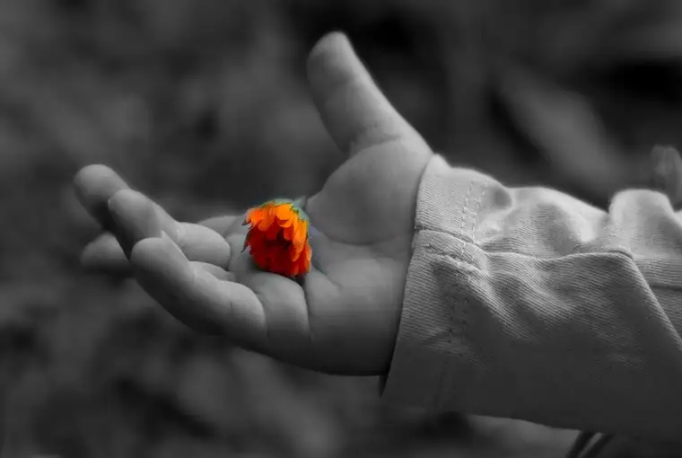

The tiny girl slipped away momentarily from her father, who stood in an area of the sidewalk we call “the trap.” It’s an indented section that many people who come seeking abortion in downtown Fargo believe to be the entryway, only to discover after turning into it that it’s not. They are then directed to the actual door a few feet away.
While the father conversed in that sheltered area with those who usher women into the building to have their children violently ripped from their wombs (this act cannot be couched in niceties), his living baby, perhaps two years old, toddled over to the actual door of the facility and peered inside. She then placed her hands upon the transparent door, which her mother had entered only a few hours earlier to destroy her sibling.

It was afternoon now, and much of the sidewalk traffic of the day had quelled. Most escorts had pulled the rainbow vests proclaiming their role as abortion-rights protectors from their bodies and returned them to the large, plastic bin where they’re stored and moved on. The majority of sidewalk advocates also had put away their signs and brochures, parting ways with this dismal place for another week.
A few of the pro-life advocates had either remained from before, or returned after Mass and a sip of soup, and of those, only a couple observed the darling girl in her purple coat, her dark, tender hands pressing upon the plexiglass of the one operation in our state that will perform this deadly deed. We alone took note of the inescapable incongruity: the welcome of one child and death of another.
What made her worthy of life, and her sibling, worthy of death? She, of course, was an innocent bystander, unaware. Her hands upon the glass door were simply a pining for the mother who had disappeared, now inside. She could not know that as her tiny hands reached up, she was saying goodbye to perhaps the only sister or brother she’d ever know.
My friend and I looked on silently, unable to put into words in that moment the visual’s significance. Our hearts knew, though, and we also knew we would carry this image with us for a long time, our only recourse being to bring it to our Lord, who knows all, sees all, and redeems all who approach him in humility with contrite heart.
The rest of the afternoon brought other such snapshots of sadness our way. The later hours at this facility are particularly bleak, for by then, reality has set in. Women who arrive in the morning—surrounded by those who wear “choice” on their garments and believing life would be so much better after doing this one thing—now are exiting. No longer does a look of persistence show on their faces, a determination to go forward with what they’d been promised would make their problems disappear.
Plainly put, the women leaving wear, in gait and glance, the truth of abortion. I shared my own observations on Facebook that evening: “The afternoons don’t show faces of expectation and mission. There are no snapshots of women relieved of a ‘problem’ nor shows of ‘women’s empowerment.’ Instead, we see expressions of dejection, abandonment, consternation, and shock. This is what this ‘choice’ brought. This is what those lies wrought.”
When we hear the pro-abortion messages ringing out through our land, these pieces of evidence are absent, not entered into the public trial. Few have a chance to glimpse the truth—until it’s too late. What we see on Wednesdays here, however, reveals reality, the aftermath of what abortion actually confers on our society, and it’s not a pretty picture by any means.
These images, these faces, remind us that our work is far from over, and only God can bring justice and mercy, and right the wrongs. These snapshots of sadness, seen by few and almost never recorded, have been seared into our hearts. We stand as witnesses to these moments, such as the precious hands of a small sister reaching out for her mama, and, unknowingly, for the love God had meant for her, already floating away into his merciful arms.
These pictures of pain, held for a time by us and witnessed for you in written form here, may be mostly hidden, but they are seen forever by God, and the unnamed, unseen victims are never forgotten.
[Note: I write about my experiences on the sidewalk Downtown Fargo on Wednesday, the day abortions happen at our state’s only abortion facility, for New Earth magazine — the official news publication of the Fargo Diocese. I hope you find “Sidewalk Stories” helpful in understanding the truth about abortion and how it plays out tragically each week here in Fargo, N.D. The preceding ran in New Earth’s April 2020 issue.]